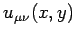
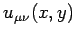
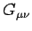

Inhalt Index DeskTop Bronstein

 Numerische Mathematik Genäherte Integration von partiellen Differentialgleichungen Methode der finiten Elemente (FEM)
Numerische Mathematik Genäherte Integration von partiellen Differentialgleichungen Methode der finiten Elemente (FEM)


Man bestimmt die Ansatzkoeffizienten  durch die Forderung, daß der Ansatz (19.147) die Variationsaufgabe (19.145a) für alle Ansatzfunktionen
durch die Forderung, daß der Ansatz (19.147) die Variationsaufgabe (19.145a) für alle Ansatzfunktionen  erfüllt, d.h., in (19.145a) wird
erfüllt, d.h., in (19.145a) wird  für u(x,y) und  für v(x,y) gesetzt. Auf diese Weise ergibt sich das lineare Gleichungssystem
für u(x,y) und  für v(x,y) gesetzt. Auf diese Weise ergibt sich das lineare Gleichungssystem
zur Bestimmung der Ansatzkoeffizienten. In (19.151) bedeuten:
Bei der Berechnung von ist zu beachten, daß Beiträge zur Integration nur die Fälle liefern, in denen die Gebiete  und Gkl keinen leeren Durchschnitt haben. Diese Gebiete sind in der folgenden Tabelle durch Schraffur gekennzeichnet.
Die Integration erfolgt jeweils über ein Dreieck mit dem Flächeninhalt , so daß die Anteile der partiellen Ableitungen nach x ergeben:
| (19.153a) |
Analog erhält man für die Anteile der partiellen Ableitungen nach y:
| (19.153b) |
Die Berechnung der rechten Seite b(ukl) von (19.151)ergibt:
| (19.154a) |
wobei mit VP das Volumen der von ukl(x,y) über Gkl beschriebenen Pyramide der Höhe 1 bezeichnet wird (s. Abbildung).
Wegen
| (19.154b) |
Damit ergeben die Variationsgleichungen (19.151) das lineare Gleichungssystem
für die Bestimmung der Ansatzkoeffizienten.